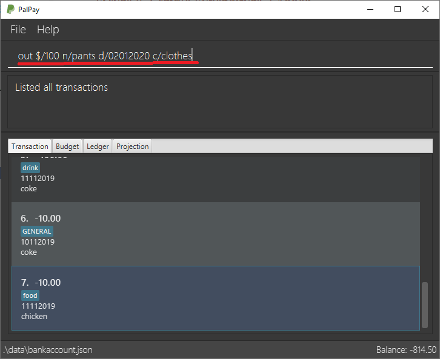
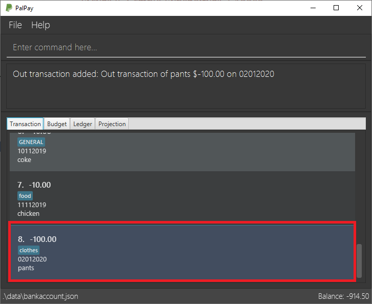
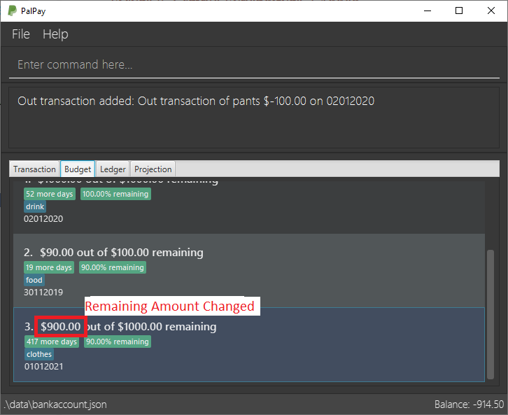

Overview
This portfolio documents my contributions to PalPay, a software engineering project under the module, CS2103T Software Engineering. My Team and I were tasked to morph an existing software application into a functional desktop application, written in Java, to better suit our intended target issues and audiences.
PalPay is a financial tracking application activated through a Command-Line-Interface (CLI). Our intended target audience being computing students who lack a centralized platform for financial management and planning.
For the project, my main role was to develop the Transaction feature. This feature represents the fundamental user logging and tracking capabilities that other features of this application subsequently depends on.
Summary of contributions
-
Code contributed: RepoSense
-
Major enhancement: Implemented the
Transactionstab and the features subsumed under it.-
What it does: Allows users to input and log their expenditure and income statements. PalPay will also display an overall transaction balance to give users an overall sensing of their financial habits.
-
Justification: This feature fulfills the primary goal of the application which is to provide users a platform to store and log all their financial statements in a fast and intuitive manner.
-
Highlights: This feature requires constant integration with all existing major features of PalPay (i.e.
outTransaction to affectbudgetif certain conditions are met). This requires constant cross-examination with other features and reimplementation of the codebase to ensure optimal functionality. This also requires a broad familiarity with the entire code base at all points during the development phase.
-
-
Minor enhancement:
-
Implemented and handled code base throughout for Update feature and
UpdateTransactionDescriptorto function with all different major features. -
Handled parser checks for the
Amountvariable for incorrect or potentially program-breaking cases. (i.e. Maximum parsed amount can only contain a value of 999,999)
-
-
Other contributions:
-
Project management:
-
Enhancements to existing features:
-
Documentation:
-
Reformatted the User Guide for a more sequential flow.
-
Wrote the details for the following commands in the User Guide.
-
In
-
Out
-
Update
-
Delete
-
-
Created UML diagrams to help in the explanation of
in / out,updateanddeletecommands in the Developer Guide. -
Included Aspect cases under Design Considerations in the Developer Guide.
-
-
Community:
-
Reported bugs and suggestions for other teams in the module. (Examples: T13-1 #223, T13-1 #222, T13-1 #221, T13-1 #220, T13-1 #219, T13-1 #216)
-
-
Contributions to the User Guide
Given below are snippets of sections I contributed to the User Guide. They showcase my ability to write documentation targeting end-users. |
Logging Expense : out
Have you recently made an expenditure that requires logging down? PalPay accepts all expenditure inputs through the out command. Inputting an out command will decrease the overall balance value. Your expenditure statements, just like the income statements, have the added option to be tagged under one or more categories. You can do so by including the [c/CATEGORY] parameter in your command line. All uncategorized incomes will be tagged under the GENERAL category.
Command Syntax
Format: out $/AMOUNT n/DESCRIPTION d/DATE [c/CATEGORY]…
Important Details
-
Note that
outTransactions differ frominTransactions in the display amount. Theinentries are characterized by the positive value within their display box whilst theoutentries are characterized by the negative values in their display box. The difference can be observed in the example usage below. -
An
outcommand will affect the remaining amount ofBudgetentries with similar categories within the same time period (Refer to Example 3).
Example Usages
Example 3
out $/100 n/pants d/02012020 c/clothes
-
Expenditure logging
-
Inputs an expenditure of "$100" with description set to "pants" and date set on "02/01/2020".
-
The income includes "clothes" under the
CATEGORYfield.Figure 1. Expenditure Logging Example 3
-
-
Budget with similar categories and time period.
-
Entry 3 of the Budget tab has
clothesunder itsCATEGORYfield. -
Entry 3 of the Budget tab has a deadline set to "01/01/2021".
 Figure 2. Budget with 'clothes' category
Figure 2. Budget with 'clothes' category
-
-
Expenditure added
-
The expenditure is added to the bottom of the Transaction tab.
-
The added expenditure has a date set to
02/01/2020. -
The added expenditure is tagged under the
clothescategory.Figure 3. Sample Expenditure 3 Added
-
-
Budget entry updated
-
The remaining amount of entry 3 of the Budget tab has decreased from "$1000" to "$900".
Figure 4. Budget entry updated
-
Example Commands:
-
out $/100 d/01012019 n/milk c/food c/drinks -
out $/29 d/29022020 n/taxi c/transport -
out $/12 d/31122019 n/burger
Updating Finance : update
Did you make a mistake in one of your entries? Perhaps you over counted that expenditure you made. PalPay provides you with an update feature which helps you change specific fields within your entries.
Command Syntax
The update feature has different implementations for different entry types. The conditions for the update feature is as follows.
Format (Transactions): update TYPE+INDEX [$/AMOUNT] [d/DATE] [n/ITEM] [c/CATEGORY]…
Format (Budget): update TYPE+INDEX [$/AMOUNT] [d/DATE] [c/CATEGORY]…
Format (Ledger): Cannot be updated
Format (Projections): Cannot be updated
Important Details
-
updaterequires at least one field to be updated. (e.g.update t1 $/20 d/10102019 n/milkandupdate t1 $/10will both be accepted). -
You can only update an existing transaction, budget or projection. Nothing will be updated if the entry of "index"
INDEXdoes not exists. -
LedgerandProjectiondo not have an update function. If you need to change specific fields within a ledger or projection entry, you should delete the target entry and recreate a new entry with your desired fields. -
You cannot change an
inTransaction to anoutTransaction or vice versa. -
Changing an expenditure’s (
outTransaction) category field to that of a Budget’s entry will reflect changes on that particular Budget entry as well. (Further explained in Example 3 below).
Changing the categories of an out Transaction entry with similar categories to that of a Budget entry will reflect changes on the budget’s remaining amount in version 2.0.
|
Example Commands:
-
update t1 $/20 n/coke c/drinks d/12122019 -
update b2 $/300 -
update t4 $/30 d/12102019
Contributions to the Developer Guide
Given below are snippets of sections I contributed to the Developer Guide. They showcase my ability to write technical documentation and the technical depth of my contributions to the project. |
Transaction: in / out
The Transaction abstract class allows user to input income and expense statements. Both in and out transactions requires the mandatory Amount, Description and Date fields to be appended. There is an optional Category field which can accept one or more input depending on the user specifications.
The in transactions will increase the BankAccount balance amount whilst the out transactions will reduce the BankAccount balance amount.
In Transactions represent the income statements inputted into Palpay.
Out Transactions represent the expenditure statements inputted into Palpay.
Current Implementation
The sequence diagram below illustrates how PalPay handles the command input in $/200 n/coke d/10102019. The arguments are parsed into the logic component where the subsequent model objects are created.

InCommandThe in and out transaction follows the same logic flow after they are parsed.
The difference between in and out transactions is that the handleBalance() method called in the BankAccount results in an addAmount operation for the inTransaction and a subtractAmount operation for the OutTransaction class.
Example
Given that the BankAccount balance initially starts with 0 dollars.
-
inTransaction of$1000will increase theBankAccountbalance from $0 to $1000. -
outTransaction of$250will subsequently decrease theBankAccountbalance from $1000 to $250. -
The Activity Diagram shown below will provide a visual representation of the two routes a Transaction object can take.
Design Considerations
-
To prevent repetitive code implementation, the
Transactionabstract class is used to facilitate income and expenditure logging.Transactionis an abstract class which contains the default constructor and commonly used variables.InTransactionandOutTransactionextends theTransactionclass as they typically store an amount, date, description, and a set of categories. A code snippet of theTransactionabstract class is shown below.
public abstract class Transaction {
protected Amount amount;
protected Date date;
protected Description description;
protected final Set<Category> categories = new HashSet<>();
public Transaction(Amount amount, Date date, Description description) {
this.amount = amount;
this.date = date;
this.description = description;
}-
The balance in
BankAccountand the balance inLedgerare considered two separate identities, both being encompassed under theUserStateclass. Therefore user operations that deal withBankAccountimplements theBankAccountOperationinterface, while operations that deal withLedgerimplements theLedgerOperationinterface.-
This allows us to achieve polymorphism by overloading methods in
Modelto handle the different operations correctly. -
This reduces code coupling as there are different models to handle different balance amounts.
-
-
A
Transactionentry can affect aBudgetwhich has similar categories and is within the same time period. The activity diagram bellow will further clarify this flow.-
Only
OutTransactions can affectBudget. -
The activity diagram below shows how and when a
Transactionobject affectsBudget.
-
Update Existing Entry Feature: update
This feature currently allows users to update Transaction or Budget entries. The user is unable to perform this feature on Ledger operations. The rationale for this will be further explained in Aspect 2: Update can not edit Ledger Operations. The user is currently unable to perform this feature on Projection operations as it will be further implemented in future updates.
Design Considerations
The update feature allows one or more fields of a Transaction or Budget to be updated. (e.g. update t1 $/2 and update t1 $/2 d/10102019 will both work as intended).
More often than not, users do not need to change an entire Transaction or Budget entry. This will minimize inputs from users if they do not require every single parameters of a Transaction or Budget to be changed.
Aspect 2: Update can not edit Ledger Operations
-
Alternative 1 (current choice): Update Command does not work with
Ledgeroperations.-
Pros: Intuitive implementation and execution for the user.
-
Cons: Requires excessive user operations.
-
The user has to first delete the
Ledgeroperation that he/she wishes to change, followed by inputting theLedgeroperation with the amended fields back into PalPay.
-
-
-
Alternative 2: Update Command to also work with
Ledgeroperations.-
Pros: Requires only one user command to append or change
Ledgerentries. -
Cons: Results in convoluted implementation and user experience. This will also hinder future permeability of the
Splitfeature.-
Ledgeroperations such assplitincludes many repeated fields (i.e. multiplePersonsandshareslist). -
Will require several conditional user inputs to differentiate between the various repeated entities that the user wishes to amend.
-
-
Future Enhancements
Update feature for Projections
Currently the update feature has not been implemented for Projection operations. In future iterations of PalPay, the update feature should work seamlessly with Projection operations, similar to that of Transaction and Budget operations
The activity diagram below will provide a visual representation of the possible user routes using the update command after this enhancement has been implemented.
update